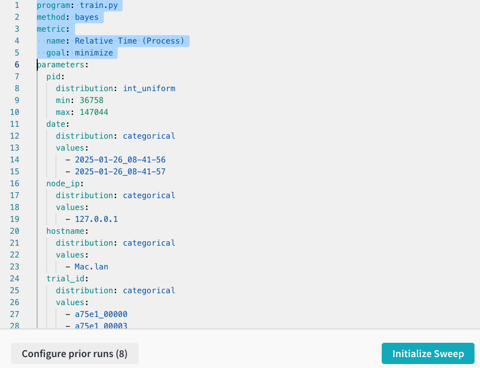

import os
from IPython.display import IFrame
from sklearn.datasets import make_classification
from sklearn.model_selection import train_test_split
import lightgbm as lgb
import ray
from ray import train, tune
from ray.tune.integration.lightgbm import TuneReportCheckpointCallback
from ray.tune.schedulers import ASHAScheduler
from ray.air.integrations.wandb import WandbLoggerCallback
import wandb
os.environ["WANDB_SILENT"] = "true"
seed = 42All healthy models are alike; each failing model fails in its own way.
There are many different ways that an ML model can fail and this is what makes model debugging challenging. For comprehensive understanding of model behavior, we log various metrics during model training. Unfortunately, because of their sheer volume, we need tools for logging, data mining, and visualization: MLflow, Neptune, Comet ML, Weights and Biases, and so on (see this blog post by Neptune about a thorough side-by-side comparison among Neptune, MLflow, and Weights and Biases).
With the increasing complexity of models, their hyperparameter spaces and the challenge of understanding their impact and interaction grow at the same time. In this post, I demonstrate how to use Weights and Biases for monitoring LightGBM model tuning by Ray Tune. I will also discuss how we can share the Weights and Biases reports publicly.
Weights and Biases + Ray Tune
Weights and Biases (WandB) is an ML model development platform that provides various services such as experiment monitoring, model tuning, model registry management, and workflow automation. In this post, I am focusing on the first two elements: monitoring and tuning. Even though WandB’s Sweeps provides hyperparameter search and optimization, in this post, I am using Ray Tune for model tuning and Sweeps for monitoring and visualization. Ray Tune is more frequently used for model tuning in ML community than WandB because it is an open source framework.
Ray’s documentation describes three ways to interact with WandB via its API, WandbLoggerCallback and setup_wandb:
- Use
WandbLoggerCallbackinTrain.RunConfig(shown in this post) - Set up
setup_wandbin a trainable function withwandb.log - Set up
setup_wandbin aTrainableclass withwandb.log
Although this documentation is excellent, it only shows iteration-level logging where logs (or metrics) are generated at every iteration (or epoch) and passed to WandB. This isn’t applicable to many existing models like the LightGBM ones. A callback is required to have the models return logged metrics during model training and tuning.
According to a WandB report, one can use WandbLogger (available in PyTorch Lightning, TorchTune, etc.) or @wandb_mixin decorator. I haven’t tried these methods because the report seems outdated (referring to ray 0.8.7), and they are not described in the Ray documentation.
Model tuning setup
To demonstrate WandB and Ray Tune integration with LightGBM models, I prepared the following setup:
- Data: Synthetic dataset with a 80:20 train-validation split
- Objective: Binary classification with class imbalance
- Model API: LightGBM native
- Training metrics: Cross entropy, AUROC, and average precision for both training and validation data
- Number of training epochs: 100
- Tunable hyperparameters:
"num_leaves": tune.choice([31, 63, 127]),
"learning_rate": tune.loguniform(1e-3, 1e-1),
"min_data_in_leaf": tune.choice([20, 50, 100]),
"max_depth": tune.choice([-1, 5, 10]),
"boosting_type": tune.choice(["gbdt", "dart"]),
"bagging_fraction": tune.uniform(0.5, 1.0),
"bagging_freq": tune.choice([0, 1, 5])- Model selection metric (tuning): Cross entropy of the validation set
- Number of searches: 8
Module import and ray initialization
ray.init(num_cpus=4)2025-01-26 10:57:00,944 INFO worker.py:1812 -- Started a local Ray instance. View the dashboard at http://127.0.0.1:8265
Training data
X, y = make_classification(
n_samples=1000, n_features=20, n_classes=2, weights=[0.9, 0.1], random_state=seed
)
X_train, X_test, y_train, y_test = train_test_split(
X, y, test_size=0.2, random_state=seed)
data = {'X_train': X_train, 'y_train': y_train, 'X_test': X_test, 'y_test': y_test} Training config (parameter space)
config = {
"objective": "binary",
"metric": ["binary_logloss", "auc", "average_precision"],
"verbose": -1,
"n_estimators": 100,
"num_leaves": tune.choice([15, 31, 63, 127]),
"learning_rate": tune.loguniform(1e-4, 1e-1),
"min_data_in_leaf": tune.choice([20, 40, 60, 80, 100]),
"max_depth": tune.choice([-1, 5, 10]),
"boosting_type": tune.choice(["gbdt", "dart"]),
"bagging_fraction": tune.uniform(0.5, 1.0),
"bagging_freq": tune.choice([0, 1, 5]),
}Training function
Here I am using ray.tune.integration.lightgbm.TuneReportCheckpointCallback with frequency=1 (every iteration) as a main callback function to log the metrics defined in config (["binary_logloss", "auc", "average_precision"]). Both training and validation dataset metrics are tracked: note that the metric names in the callback have a format of "{valid_names[i]}-{metric[i]}".
The training function below takes two inputs: config and data. Inside the function, lightgbm.Dataset objects are constructed and the native lightgbm.train is called. Training data (data) can be later passed to the Tune wrapper via tune.with_parameters.
def train_function(config, data):
train_set = lgb.Dataset(data['X_train'], data['y_train'])
val_set = lgb.Dataset(data['X_test'], data['y_test'], reference=train_set)
model = lgb.train(
config,
train_set,
valid_sets=[train_set, val_set],
valid_names=["train", "val"],
callbacks=[
TuneReportCheckpointCallback(
frequency=1,
metrics={
"train_loss": "train-binary_logloss",
"train_auc": "train-auc",
"train_average_precision": "train-average_precision",
"val_loss": "val-binary_logloss",
"val_auc": "val-auc",
"val_average_precision": "val-average_precision",
},
)
],
)Tuner
WandbLoggerCallback is used with a project name to send logs to WandB’s server. Like train_function, the tuner accepts config and data arguments. Following Ray’s best practices, datasets are passed through the data argument via tune.with_parameters rather than the config.
n_searches = 8
def tune_with_callback(config, data):
tuner = tune.Tuner(
tune.with_parameters(train_function, data=data),
param_space=config,
tune_config=tune.TuneConfig(
metric="val_loss", mode="min", num_samples=n_searches
),
run_config=train.RunConfig(
callbacks=[WandbLoggerCallback(project="WandB-RayTune-LightGBM")]
),
)
tuner.fit()WandB setup
WandB requires sign-up. Their free tier offers limited storage and support but includes core functionality. Follow their quickstart page for setup.
wandb.login()Truetune_with_callback(config, data)Tune Status
| Current time: | 2025-01-26 10:57:34 |
| Running for: | 00:00:19.66 |
| Memory: | 12.6/16.0 GiB |
System Info
Using FIFO scheduling algorithm.Logical resource usage: 1.0/4 CPUs, 0/0 GPUs
Trial Status
| Trial name | status | loc | bagging_fraction | bagging_freq | boosting_type | learning_rate | max_depth | min_data_in_leaf | num_leaves | iter | total time (s) | train_loss | train_auc | train_average_precis ion |
|---|---|---|---|---|---|---|---|---|---|---|---|---|---|---|
| train_function_97fa2_00000 | TERMINATED | 127.0.0.1:83708 | 0.878482 | 1 | gbdt | 0.0409389 | -1 | 60 | 31 | 100 | 0.417227 | 0.0631622 | 0.997799 | 0.982008 |
| train_function_97fa2_00001 | TERMINATED | 127.0.0.1:83706 | 0.658912 | 5 | dart | 0.0170101 | 10 | 60 | 127 | 100 | 0.392265 | 0.241471 | 0.967141 | 0.770121 |
| train_function_97fa2_00002 | TERMINATED | 127.0.0.1:83705 | 0.837067 | 1 | dart | 0.0775392 | 10 | 60 | 63 | 100 | 0.443744 | 0.102647 | 0.992724 | 0.945557 |
| train_function_97fa2_00003 | TERMINATED | 127.0.0.1:83707 | 0.622214 | 0 | gbdt | 0.000216889 | 5 | 100 | 127 | 100 | 0.37126 | 0.323874 | 0.93965 | 0.554631 |
| train_function_97fa2_00004 | TERMINATED | 127.0.0.1:83838 | 0.821865 | 5 | gbdt | 0.00415785 | -1 | 100 | 63 | 100 | 0.41642 | 0.232447 | 0.960898 | 0.734143 |
| train_function_97fa2_00005 | TERMINATED | 127.0.0.1:83837 | 0.8452 | 0 | dart | 0.0109837 | 10 | 40 | 15 | 100 | 0.54864 | 0.266188 | 0.974223 | 0.853426 |
| train_function_97fa2_00006 | TERMINATED | 127.0.0.1:83839 | 0.574684 | 0 | gbdt | 0.00362588 | 10 | 100 | 63 | 100 | 0.412159 | 0.238196 | 0.962041 | 0.730329 |
| train_function_97fa2_00007 | TERMINATED | 127.0.0.1:83836 | 0.698182 | 0 | gbdt | 0.0277846 | 5 | 40 | 15 | 100 | 0.466146 | 0.0752791 | 0.99627 | 0.972842 |
2025-01-26 10:57:14,965 INFO wandb.py:319 -- Already logged into W&B.
WARNING: All log messages before absl::InitializeLog() is called are written to STDERR
I0000 00:00:1737910636.174542 19552148 chttp2_transport.cc:1182] ipv4:127.0.0.1:51265: Got goaway [2] err=UNAVAILABLE:GOAWAY received; Error code: 2; Debug Text: Cancelling all calls {grpc_status:14, http2_error:2, created_time:"2025-01-26T10:57:16.17454-06:00", file_line:1171, file:"external/com_github_grpc_grpc/src/core/ext/transport/chttp2/transport/chttp2_transport.cc"}
I0000 00:00:1737910636.176357 19552148 chttp2_transport.cc:1182] ipv4:127.0.0.1:51256: Got goaway [2] err=UNAVAILABLE:GOAWAY received; Error code: 2; Debug Text: Cancelling all calls {grpc_status:14, http2_error:2, created_time:"2025-01-26T10:57:16.176356-06:00", file_line:1171, file:"external/com_github_grpc_grpc/src/core/ext/transport/chttp2/transport/chttp2_transport.cc"}
I0000 00:00:1737910645.637782 19552148 chttp2_transport.cc:1182] ipv4:127.0.0.1:51511: Got goaway [2] err=UNAVAILABLE:GOAWAY received; Error code: 2; Debug Text: Cancelling all calls {grpc_status:14, http2_error:2, created_time:"2025-01-26T10:57:25.637779-06:00", file_line:1171, file:"external/com_github_grpc_grpc/src/core/ext/transport/chttp2/transport/chttp2_transport.cc"}
I0000 00:00:1737910645.648876 19552148 chttp2_transport.cc:1182] ipv4:127.0.0.1:51523: Got goaway [2] err=UNAVAILABLE:GOAWAY received; Error code: 2; Debug Text: Cancelling all calls {grpc_status:14, http2_error:2, created_time:"2025-01-26T10:57:25.648874-06:00", file_line:1171, file:"external/com_github_grpc_grpc/src/core/ext/transport/chttp2/transport/chttp2_transport.cc"}
2025-01-26 10:57:34,623 INFO tune.py:1009 -- Wrote the latest version of all result files and experiment state to '/Users/hongsupshin/ray_results/train_function_2025-01-26_10-57-14' in 0.0332s.
2025-01-26 10:57:49,893 INFO tune.py:1041 -- Total run time: 34.95 seconds (19.62 seconds for the tuning loop).
(train_function pid=83708) /opt/homebrew/Caskroom/miniforge/base/envs/wandb/lib/python3.12/site-packages/lightgbm/engine.py:204: UserWarning: Found `n_estimators` in params. Will use it instead of argument
(train_function pid=83708) _log_warning(f"Found `{alias}` in params. Will use it instead of argument")
(train_function pid=83708) Checkpoint successfully created at: Checkpoint(filesystem=local, path=/Users/hongsupshin/ray_results/train_function_2025-01-26_10-57-14/train_function_97fa2_00000_0_bagging_fraction=0.8785,bagging_freq=1,boosting_type=gbdt,learning_rate=0.0409,max_depth=-1,min_data__2025-01-26_10-57-14/checkpoint_000000)
(train_function pid=83706) /opt/homebrew/Caskroom/miniforge/base/envs/wandb/lib/python3.12/site-packages/lightgbm/engine.py:204: UserWarning: Found `n_estimators` in params. Will use it instead of argument [repeated 3x across cluster] (Ray deduplicates logs by default. Set RAY_DEDUP_LOGS=0 to disable log deduplication, or see https://docs.ray.io/en/master/ray-observability/user-guides/configure-logging.html#log-deduplication for more options.)
(train_function pid=83706) _log_warning(f"Found `{alias}` in params. Will use it instead of argument") [repeated 3x across cluster]
(train_function pid=83708) Checkpoint successfully created at: Checkpoint(filesystem=local, path=/Users/hongsupshin/ray_results/train_function_2025-01-26_10-57-14/train_function_97fa2_00000_0_bagging_fraction=0.8785,bagging_freq=1,boosting_type=gbdt,learning_rate=0.0409,max_depth=-1,min_data__2025-01-26_10-57-14/checkpoint_000046) [repeated 190x across cluster]
(raylet) WARNING: 16 PYTHON worker processes have been started on node: 0c8a8cbf6029ce14f7fb87978d96c38f57da4534a8d65e705f6940a9 with address: 127.0.0.1. This could be a result of using a large number of actors, or due to tasks blocked in ray.get() calls (see https://github.com/ray-project/ray/issues/3644 for some discussion of workarounds).
(raylet) WARNING: All log messages before absl::InitializeLog() is called are written to STDERR (raylet) I0000 00:00:1737910645.636949 19552110 chttp2_transport.cc:1182] ipv4:127.0.0.1:51511: Got goaway [2] err=UNAVAILABLE:GOAWAY received; Error code: 2; Debug Text: Cancelling all calls {grpc_status:14, http2_error:2, created_time:"2025-01-26T10:57:25.636948-06:00", file_line:1171, file:"external/com_github_grpc_grpc/src/core/ext/transport/chttp2/transport/chttp2_transport.cc"} (train_function pid=83837) /opt/homebrew/Caskroom/miniforge/base/envs/wandb/lib/python3.12/site-packages/lightgbm/engine.py:204: UserWarning: Found `n_estimators` in params. Will use it instead of argument [repeated 4x across cluster] (train_function pid=83837) _log_warning(f"Found `{alias}` in params. Will use it instead of argument") [repeated 4x across cluster] (train_function pid=83836) Checkpoint successfully created at: Checkpoint(filesystem=local, path=/Users/hongsupshin/ray_results/train_function_2025-01-26_10-57-14/train_function_97fa2_00007_7_bagging_fraction=0.6982,bagging_freq=0,boosting_type=gbdt,learning_rate=0.0278,max_depth=5,min_data_i_2025-01-26_10-57-15/checkpoint_000000) [repeated 212x across cluster] (train_function pid=83837) Checkpoint successfully created at: Checkpoint(filesystem=local, path=/Users/hongsupshin/ray_results/train_function_2025-01-26_10-57-14/train_function_97fa2_00005_5_bagging_fraction=0.8452,bagging_freq=0,boosting_type=dart,learning_rate=0.0110,max_depth=10,min_data__2025-01-26_10-57-14/checkpoint_000067) [repeated 265x across cluster]
Sweeps visualization with Ray Tune runs
After tuning completes, WandB’s dashboard displays all search runs. I can access visualizations through either the Sweeps sidebar panel or by selecting runs and clicking “New Sweeps.”

This leads to the Sweep Configuration page, which shows an auto-generated YAML file that may need correction. For example, the optimization metric incorrectly shows “Relative Time (Process)” instead of “val_loss”.

While WandB’s Sweeps offers hyperparameter optimization, its primary strength lies in visualization capabilities. Below is an interactive report showing results from the above tuning run.
IFrame("https://wandb.ai/auth0-1wgih-hs/WandB-RayTune-LightGBM/reports/Tuning-trial-1--VmlldzoxMTA5NDQxMg", style="border:none", height=1024, width="100%")The Sweeps visualization offers two key plots: the hyperparameter importance plot and the parallel coordinates plot. The importance plot (top) reveals that learning rate has the strongest influence on validation loss in this run. Users can analyze different metrics via the drop-down menu and add comparative plots for training and validation scores. The parallel coordinates plot (bottom) visualizes hyperparameter interactions. Mouse-over highlights individual runs, and val_loss color gradient helps identify optimal parameter combinations, with darker colors indicating lower (better) scores.
Sharing Sweeps results publicly
An existing WandB result (report, Sweeps, etc.) can be shown in a Jupyter notebook by using %wandb magic (documentation):
# Display a project workspace
%wandb USERNAME/PROJECT
# Display a single run
%wandb USERNAME/PROJECT/runs/RUN_ID
# Display a sweep
%wandb USERNAME/PROJECT/sweeps/SWEEP_ID
# Display a report
%wandb USERNAME/PROJECT/reports/REPORT_ID
# Specify the height of embedded iframe
%wandb USERNAME/PROJECT -h 2048To share the interactive plots shown above, I used a different method: creating and sharing a WandB report. In a report, users can add results, visualizations, text, imaged, etc. as if it is a Jupyter notebook. After creating a report, I embedded my report’s iframe output to enable Quarto rendering (the publishing tool I am currently using). To generate a public report, change the visibility to “Public” in the project settings page:

Model tuning with ASHA scheduler
To optimize tuning efficiency, in the example below, I added ASHAScheduler (Asynchronous Successive Halving Algorithm) in tune.TuneConfig and increased the number of searches to 128.
n_searches = 128
def tune_with_asha(config, data):
tuner = tune.Tuner(
tune.with_parameters(train_function, data=data),
param_space=config,
tune_config=tune.TuneConfig(
metric="val_loss",
mode="min",
num_samples=n_searches,
scheduler=ASHAScheduler(),
),
run_config=train.RunConfig(
callbacks=[WandbLoggerCallback(project="WandB-RayTune-LightGBM")]
),
)
tuner.fit()
tune_with_asha(config, data) 
The parallel coordinates plot from this run includes a Step axis (second from the right) that visualizes ASHAScheduler’s behavior. The dark purple curves represent trials that ran longer (higher Step values) and achieved lower val_loss. This demonstrates ASHA’s effectiveness at pruning unpromising trials through early stopping. With more searches, hyperparameter impacts are more clear here. For example, lower learning rates consistently lead to poorer model performance in this run.
Summary
This post demonstrated how to combine Weights & Biases visualization capabilities with Ray Tune’s hyperparameter optimization for LightGBM models. Ray Tune provides flexible and scalable hyperparameter tuning machinery, while WandB offers detailed visualization tools for analyzing results. Even though WandB offers model tuning service, Ray Tune is still one of the main model tuning frameworks in ML community, and thus it is valuable to understand their integration. Among WandB’s visualization tools, the parallel coordinates and hyperparameter importance plots provide valuable insights into parameter relationships and their impact on model performance.